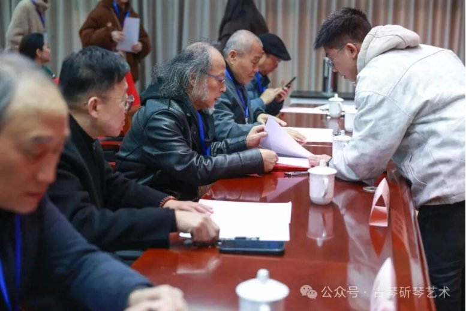
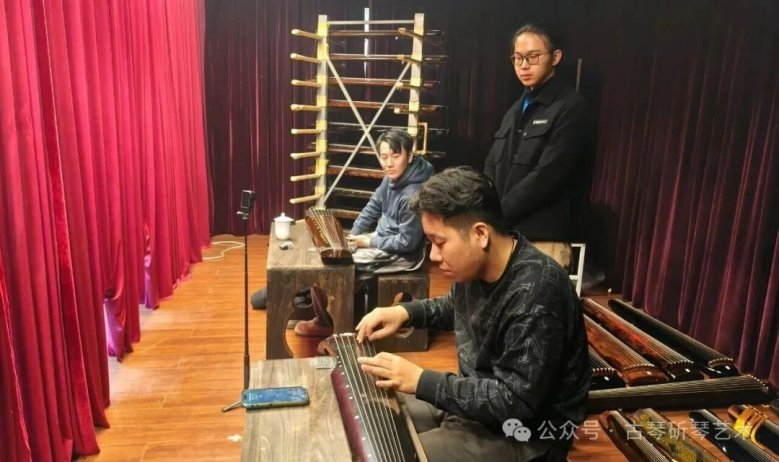
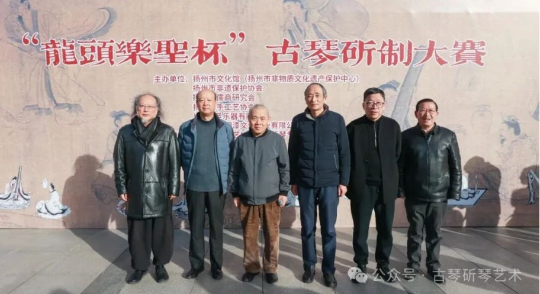

2025年11月28日から30日、2025「龍頭楽聖杯」古琴製作大賽が揚州市文化館で開催された。陝西龍頭国漆文化産業有限公司が共催として参加し、袁端姣が漆芸専門家として髹漆賞の審査員を務めた。

木骨漆韻：琴という名の集い
古琴の音色は、半分は木に、半分は漆にある。琴面を覆う生漆の層は、楽器を百年の歳月から守るだけでなく、「清・微・淡・遠」の音色の最終的な表現にも関わっている。2025年11月28日午前、「龍頭楽聖杯」古琴製作大賽の開幕式が揚州市文化館で行われ、専門審査員、会員代表審査員および監事が記念撮影を行った。本大会は、揚州市文化館（揚州市無形文化遺産保護センター）、揚州市無形文化遺産保護協会、揚州市儒商研究会、揚州市手工芸協会、上海楽聖楽器有限公司、陝西龍頭国漆文化産業有限公司の共催、揚州市手工芸協会古琴斫琴専門委員会の運営により開催された。80余りの名琴が参加し、全国の斫琴人材が揚州に集い、絲桐の調べの中で技を味わい、木骨漆韻の中で無形文化遺産の温もりに触れた。
「幕の後ろで聴き、その場で探点」：最も厳格な音色審査
11月28日は音色審査が行われた。審査の公平性を確保するため、すべての出品作品は事前にコードを交換し、元のコードは3つの主催団体の代表からなる第三者が管理。審査スタッフも審査員も作品番号と作者の対応を知らないまま審査に臨んだ。音色審査では、王鵬、曽成偉、徐君躍、倪詩韻、裴金宝、朱正海の6人の専門家が、10人の会員代表とともに審査団を構成し、「幕の後ろで聴き、その場で探点」という方式を採用。審査の全過程は録画・ライブ配信され、「10張ずつグループ化、各グループ間に10分の休憩」という運営で、公開・公平・公正を確保した。


漆芸審査員の登場：木骨の下の漆韻
11月29日午前には髹漆賞・工芸賞の審査が行われた。古琴分野の専門家・曽成偉、徐君躍、裴金宝、倪詩韻、朱正海、厳舜揚、胡丹越に加え、漆芸専門家の張来喜、袁端姣が審査員を務めた。審査員は器形のデザイン、弦間の精度、弾奏の手触り、表現の創造性、付属品の工芸、髹漆の質感などの多次元から、各琴に髹漆点と工芸点をつけた。陝西省工芸美術大師であり、省級髹漆技芸無形文化遺産継承者である正大明文化産業グループ創始者の袁端姣は、秦巴の髹漆技法に長年取り組んできた。漆芸専門家としての審査参加は、秦巴漆芸と古琴斫琴という二つの無形文化遺産技芸の正面の出会いでもあった。琴の漆は決して装飾ではなく、灰胎の厚みと漆層の重なりは、そのまま一張の琴の手触りと声に書き込まれる。
三部門賞と「龍頭楽聖賞」
本大会は音色・髹漆・工芸の三部門賞を設け、三点の合計点から最高栄誉「龍頭楽聖賞」を選出した。67世孝華本家が製作した「嵇康」款の古琴は、樹齢百年の桐材を素材に、選材・開材・鉋掛け・槽腹掘り・合琴・上漆・調音など数十の伝統工程を経て仕上げられ、精湛な工芸、円熟した音色、深い文化的底蘊により三重の厳格な審査を経て「音色銀賞」を獲得し、中華伝統古琴芸術に新たな栄誉を加えた。

漆を琴の上へ取り戻す
1925年、漆商・袁永齢が「正大明」商号を創立し「牛王漆」を扱って以来、正大明は漆という一筋の糸と百年を共にしてきた。今日、正大明文化産業グループは秦巴の髹漆に12年間取り組み、安康、恩施、城口、商洛、竹渓に5000余畝の漆樹基地を持ち、「会社＋合作社＋農家」の方式で600人以上の雇用を生み出し、漆樹の栽培から生漆の採取、精製漆の精製、髹塗・成器まで、一条の漆産業チェーンを構築している。今回の古琴製作大賽共催は、漆を媒として「琴棋書画」の筆頭である古琴という無形文化遺産と深く対話するとともに、秦巴の生漆をその千年の古典的舞台である「琴の上」へ取り戻すことでもある。今後も龍頭国漆は材料と技の強みで、古琴・漆器・漆修復などより多くの伝統工芸分野に寄与し、中国の漆を時代に再び見えるようにしていく。